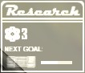

|
|
MANUALE DI SCIENCE AND INDUSTRY Translated by Felix GR (x l' ITALIANO) |


- Introduction
- Basics
- Advanced
- Interface
- Gameplay_Advice
An advanced guide is also available, which gives more details about the gameplay of Science & Industry:
Science and Industry è un mod teamplay per Half-Life dove i giocatori prendono il ruolo degli ufficiali della sicurezza di una delle 2 corporazioni concorrenti nella ricerca di tecnologie avanzate. Ognuna delle corporazioni inizia con 3 scienziati che producono ricerche che segueno un migliore equipaggiamento per la compagnia e traducono direttamente in un incremeto del movimento di soldi. L'efficienza dei vostri scienziati dipende su quanto tempo lavorano... per cui il vostro lavoro è di proteggerli dai raid dei nemici e tentare raid per rallentare la loro produzione. Ancora meglio, potete catturare gli scienziati nemici, portandoli al vostro laboratorio e stabilendo un netto vantaggio. Tutto quello che dovete fare è di correre al laboratorio nemico e colpire uno degli scienziati sulla testa con la vostra valigetta... il trucco è tornare indietro al dipartimento delle vostre risorse umane vivo e con la nuova "recluta"...
La storia è che che ogni corporazione inizia con una tecnologia molto bassa... per cui il vostro team deve scegliere quali tecnologie da ricercare per guadagnare percentuale di mercato! Aggiornare le vostre armi tecnologiche potrebbe essere molto utile in battaglia, ma avrete brutti momenti scappando con gli scienziati se non avete armatura o impianti bionici. Alcune tecnologie si ripercuotono sulla produttività dello scienziato... permettendovi di ricevere un vantaggio di soldi in un gioco chiuso "close game"! Tutto questo può essere vostro ... basta solo iscriversi come guardia di sicurezza per Midland Carbide Labs [MCL] o Amalgamated Fluorodynamics [AFD].
Leggete la sezione seguente per maggiori dettagli.
 Per
essere un membro importante della vostra società, in primo luogo dovete imparare come navigare per
la vostra base. Ogni mappa ha una disposizione differente, ma tutte hanno elementi in comune che potrebbero
renderle familiari. Seguite le inidicazioni localizzate nella base per travare questi ambienti. Se non
siete sicuri in che base vi trovate, cercate inidizi colorati: blue per Midland Carbide Labs (MCL) e verde
per Amalagamated Flurodynamics (AFD).
Per
essere un membro importante della vostra società, in primo luogo dovete imparare come navigare per
la vostra base. Ogni mappa ha una disposizione differente, ma tutte hanno elementi in comune che potrebbero
renderle familiari. Seguite le inidicazioni localizzate nella base per travare questi ambienti. Se non
siete sicuri in che base vi trovate, cercate inidizi colorati: blue per Midland Carbide Labs (MCL) e verde
per Amalagamated Flurodynamics (AFD).
- Cloning Facilities - I giocatori che sono uccisi servendo la compagnia, saranno clonati in questa parte del laboratorio. In questa stanza potrete trovare cariche di salute e armatura per rimettervi in salute. Quando sarete piuttosto malridotti, ritiratevi in questa stanza per ricaricarvi.
- Prototype Storage - Le armi e dispositivi prodotti dalla vostra corporazione per vostro uso, sono immagazzinate insieme nella stanza Prototype Storage. Qui ci saranno i prototipi sperimentali dei vostri sviluppi più recenti, così come i contenitori con munizioni e altro armamento. In molte sezioni, questa stanza è compresa con quella Cloning Facilities per aiutare lo 'stock-up' degli impiegati appena comparsi.
- Research Labs - Il laboratorio di ricerca è dove i vostri scienziati lavorano. Da proteggere ad ogni costo!.
- Human Resources - L' amministratore sorveglia i funzionamenti della società dal suo ufficio : Human Resources. Quando troverete qualcosa che può beneficiare alla compagnia (reclutare scienziati, armi rubate, etc.), portatele a lui.
-
Computer Labs - Alcune mappe hanno macchinari molto costosi che contribuiscono alle
capacità di ricerca dei vostri scienziati. Difendete quest' area da qualsiasi possibile
sabotatore.
 Come guardia della
sicurezza, la vostra missione, your mission, su tutto il resto è di rendere sicuro il vostro
laboratorio. Quando tutto va bene, gli scienziati si muoveranno per il laboratorio e facendo molte
ricerche. Secondo la disposizione della mappa, il laboratorio potrebbe essere una grande stanza o diverse
stanze piccole. I vostri scienziati si muoveranno liberamente per tutto l'intero perimetro del laboratorio.
Se terrete soddisfatti gli scienziati da disturbi vari, loro produrranno di più e faranno maggiori
ricerche (migliori armi, armature e tecnologia) e maggiori soldi per il vostro team.
Come guardia della
sicurezza, la vostra missione, your mission, su tutto il resto è di rendere sicuro il vostro
laboratorio. Quando tutto va bene, gli scienziati si muoveranno per il laboratorio e facendo molte
ricerche. Secondo la disposizione della mappa, il laboratorio potrebbe essere una grande stanza o diverse
stanze piccole. I vostri scienziati si muoveranno liberamente per tutto l'intero perimetro del laboratorio.
Se terrete soddisfatti gli scienziati da disturbi vari, loro produrranno di più e faranno maggiori
ricerche (migliori armi, armature e tecnologia) e maggiori soldi per il vostro team.
Gli Scienziati della vostra società troveranno MOLTO duro lavorare se c'è molto disturbo nel laboratorio, così parte del vostro compito sarà garantire la tranquillità di questi. Mantenete la calma nel laboratorio facendo in modo che le armi non facciano fuoco. Nulla disturba di più che una razzata vicino ai vostri esperimenti e questo si applica alle vostre armi così come alle armi degli ufficiali di sicurezza nemici.
Se fallite questo ed il rumore invaderà il laboratorio, noterete calare l'efficienza dei vostri scienziati. Potete vedere l'efficienza del vostri scienziati guardando l' atomo nella parte inferiore dell' HUD. Se tutto va bene, l' atomo sarà completamente bianco, se gli scienziati sono disturbati, l'atomo sarà parzialmente bianco, il resto grigio. Più grigio diventa, più inefficienti sono gli scienziati. Se gli scienziati sono inefficienti produco0no meno soldi, ricerche e tecnologia.
I vostri scienziati possono essere uccisi dai vostri avversari (non possono cmq essere uccisi da uno del vostro team - attaccandoli li disturberete solamente, rendendoli meno efficienti). Potrebbe essere una buona soluzione per ferire la compagnia rivale, come dovranno spendere più soldi per prenderne di nuovi e le loro ricerche sono bloccate per breve tempo. Comunque, i vostri scienziati non amano sentire che i loro colleghi, anche se di opposte compagnie, vengono uccisi, per cui caleranno di efficienza ogni volta che ucciderete uno scienziato rivale. Inoltre, se ucciderete un eccessivo numero di scienziati nemici, i vostri scienziati vi impianteranno un chip nella testa che vi darà una scossa ogni volta che farete male ad uno scinziato nemico. Perderete anche i frags per aver ucciso scienziati nemici. Per cui, in generale, uccidere scienziati nemici non è una buona idea. Anche se, nel caso in cui non avete scinziati dalla vostra parte, è caccia aperta a quelli avversari.
All'inizio di ogni mappa, ciascun team avrà un certo ammontare di soldi, 3 scienziati ed alcune armi base (valigetta e colt defender). Pochi secondi dopo, ogni scienziato del team sarà pronto ad iniziare la ricerca ed un semplice menu di voto sarà visualizzato con le prime scelte. Ogni membro del team avrà alcuni secondi per votare, allora i voti saranno coincisi ed il seguente obiettivo di ricerca sarà definito.
S&I Technology Tree (Full-sized chart)
 Il tech tree è
discretamente complesso, in uno stile simile a quello della erie di strategici della serie Civilization.
Ogni nuova tecnologia che volete ricercare richiede che già avete ricercato i pre-requisiti a quella
tecnologia prima che la ricerca possa cominciare. Ogni volta che i vostri scienziati sono pronti ad
iniziare una nuova ricerca, un menu apparirà dandovi 6 opzioni di ricerca tra i quali scegliere,
come nuove armi, armature migliori o anche impianti speciali per rendere il vostro team più
efficiente in combattimento. Se ci sono più di 6 argomenti di ricerca per i quali avete i
pre-requisiti, generalemente sono i più utili saranno visualizzati. Ricordate che il vostro team
inizia il round senza armatura e non riceverete nulla dalla ricarica delle armature finchè non
ricercherete tecnologie in proposito.
Il tech tree è
discretamente complesso, in uno stile simile a quello della erie di strategici della serie Civilization.
Ogni nuova tecnologia che volete ricercare richiede che già avete ricercato i pre-requisiti a quella
tecnologia prima che la ricerca possa cominciare. Ogni volta che i vostri scienziati sono pronti ad
iniziare una nuova ricerca, un menu apparirà dandovi 6 opzioni di ricerca tra i quali scegliere,
come nuove armi, armature migliori o anche impianti speciali per rendere il vostro team più
efficiente in combattimento. Se ci sono più di 6 argomenti di ricerca per i quali avete i
pre-requisiti, generalemente sono i più utili saranno visualizzati. Ricordate che il vostro team
inizia il round senza armatura e non riceverete nulla dalla ricarica delle armature finchè non
ricercherete tecnologie in proposito.
La velocità in cui ciascuno obiettivo viene scoperto dipende da quanti scienziati ci sono nella
squadra e quanto calmi sono riusciti a mantenere i laboratori. Se una squadra recluta gli scienziati della
fazione avversaria è molto probabile che saranno diversi livelli di tecnologia avanti a voi.
Se morirete con onore per la vostra compagnia, questa vi riporterà in vita tramite la tecnologia della clonazione. La tecnologia costa soldi (guardate sotto). Una società che spende molti soldi per le loro guardie di sicurezza morte, non avrà molti soldi da parte. Ci sarà anche un piccolo ritardo perchè il processo di clonazione sia completo, che può essere ridotto attraverso le opzioni speciali di ricerca. Dopo che siete stati clonati, sarete invulnerabili per alcuni secondi, usate questo tempo per eliminare qualsiasi nemico che vi attende nella stanza di clonazione.
Un bel modo per aiutare la produttività del vostro laboratorio è di "reclutare" scienziati dalla società avversaria. Potete fare ciò entrando silenziosamente nel laboratorio avversario, tirar fuori la vostra valigetta e darla in testa allo scienziato nemico. Sfortunatamente per voi, gli scienziati riconoscono le uniformi della compagnia avversaria e prenderanno il panico cercando di scappare da voi. Di solito, non è difficile catturarli (sempre che non ci siano guardie nemiche nei paraggi) e quindi prenderli sulle spalle e portarli al dipartimento della Human Resources della vostra compagnia.
 Una volta preso lo scienziato dovete
tornare indietro alla vostra compagnia e trovare l'amministratore. L amministratore (figura a sinistra)
"convincerà" lo scienziato che lui o lei sarebbero meglio impiegati alla vostra compagnia ed il
vostro team avrà una nuova unità di ricerca. Se avete problemi nel trovare l'amministratore,
provate seguendo i segnali "Human Resources" che sono sparsi per la maggior parte dei livelli.
Una volta preso lo scienziato dovete
tornare indietro alla vostra compagnia e trovare l'amministratore. L amministratore (figura a sinistra)
"convincerà" lo scienziato che lui o lei sarebbero meglio impiegati alla vostra compagnia ed il
vostro team avrà una nuova unità di ricerca. Se avete problemi nel trovare l'amministratore,
provate seguendo i segnali "Human Resources" che sono sparsi per la maggior parte dei livelli.
Se venite uccisi portando uno scienziato, questo cadrà dove siete morti e ritornerà alla
proprio laboratorio non appena riprende conoscenza. Finchè è fuori gioco, comunque, il vostro
team ha la possibilità di prenderlo e portarlo al laboratorio. Solo il team che ha provato a
catturare uno scienziato può prenderlo nuovamente sù, il team opposto può solo tenerlo
d'occhio finchè non si riprende e torna al laboratorio.
Se uccidete un avversario che sta tenendo della tecnologia che la vostra società non ha ancora ricercato, potete prendere l' arma od il dispositivo e lo portate nuovamente al vostro amministratore per un bonus di ricerca. per prendere l'arma, dovete togliere quella che avete in mano e camminare verso di lui. Ogni consegna di oggetto avvenuta con successo, dimuisce il tempo che normalmente ci vuole per la ricerca di quell'oggetto; questo effetto è cumulativo. Comunque, per avere accesso finale a questa tecnologia rubata, necessiterete di dire ai vostri scinziati di finire la ricerca nella tecnologia salvata votando per quell'oggetto.
Se la vostra azienda è avanti nella ricerca delle armi o ha un dispositivo che il vostro avversario non ha, siate prudenti. Se andate in battaglia portando quell'arma o dispositivo e venite uccisi, il vostro avversario approfitterà dell' occasione per distruggere il vostro vantaggio su di loro rubando la vostra tecnologia. Per cui, se siete feriti gravemente, state attenti a non lasciare i valori tecnologici in battaglia.
 Molte
attrezzature di alta tecnologia contano su apparecchiature costose per aiutarvi nella ricerca. Anche se
queste apparecchiature possono far risparmiare molti soldi e tempo alla società, le lascia
vulnerabili ai sabotatori. Potrete entrare silenziosamente nel laboratorio di ricerche nemico, dando
un'occhiata ai computers nemici, equipaggiamento per la clonazione o qualsiasi cosa che potrebbe
danneggiarli se viene perduta.
Molte
attrezzature di alta tecnologia contano su apparecchiature costose per aiutarvi nella ricerca. Anche se
queste apparecchiature possono far risparmiare molti soldi e tempo alla società, le lascia
vulnerabili ai sabotatori. Potrete entrare silenziosamente nel laboratorio di ricerche nemico, dando
un'occhiata ai computers nemici, equipaggiamento per la clonazione o qualsiasi cosa che potrebbe
danneggiarli se viene perduta.
In modo da sapere cosa è importante, leggete le specifiche della mappa nel suo readme. E'
visualizzato quando selezionate il vostro team all' inizio del gioco. Leggete tutti gli obbiettivi critici
per la mappa e saprete quale equipaggiamento da eliminare e distruggere.
Il migior modo di distruggere l'equipaggiamento nemico è con la valigetta o dell'esplosivo. Una volta distrutto l'equipaggiamento, quella compagnia perderà diverso tempo e risorse per ripare il danno e dopo uno specifico lasso di tempo sarà ripristinato.
Alcune mappe contengono speciali risorse che possono dare alla vostra compagnia un vantaggio sui vostri avversari. Leggete il readme della mappa nel menu di selezione del team e potrete sapere quali risorse esistono per quella mappa.
Tutte le risorse sono differenti e saranno descritte dettagliamente nel readme. In generale, seguono un modello in cui li selezionate da un certo punto (la base del nemico o una sorta di terra neutrale) e li restituite di nuovo al vostro amministratore nelle Human Resources. In molti modi, questo è simile al trasportare uno scienziato, ma la risorsa può cambiare in molti modi. Uno, se morirete trasportando uno scienziato, un vostro compagno ha la possibilità di prenderlo prima che rinvenga. Con le risorse, se lasciate le risorse, vengono perdute. Inoltre, alcune risorse hanno un limite di tempo per essere consegnate ed altre proprietà. Leggete il readme della mappa per sapere a cosa andate incontro quando cercate per una risorsa.
Science and Industry usa stats separate per valutare le performance dei giocatori di un team. Il punteggio del Team è misurato dalla somma dei soldi che ha, considerando che quello che un giocatore sta facendo è misurato dai numeri di frags. Bonus frags vengono dati per diverse situazioni, nell'aiutare il bilanciamento nella difesa e nell'attacco. Il punteggio corrente del team è sempre visualizzato nell'angolo in alto a destra del vostro schermo.
| Corporate Funds | |
| Reddito di base al secondo della società: | $60 |
| Produzione extra per scienziato al secondo. (alla massima efficienza): | $15 |
| Servizi di clonazione | -$800 |
| Assumere nuovo scienziato | -$1,000 |
| Personal Score Bonuses | |
| Uccisione di un ufficiale nemico | 1 |
| Uccisione dell'impiegato del mese rivale | 2 |
| Uccisione di un ufficiale rivale vicino al laboratorio (ma disturba gli scienziati) | 2 |
| Uccisione di un ufficiale rivale vicino al laboratorio (senza disturbare gli scienziati) | 3 |
| Defendere un reclutato (chiunque trasporta uno scienziato) | 2 |
| Uccisione di un ufficiale rivale che "stà reclutando" uno dei vostri scienziati | 2 |
| Reclutare uno scienziato con successo | 5 |
| Salvare la tecnologia delle armi per ulteriori ricerche | 2 |
| Distruzione della tecnologia nemica (computers ed altri equipaggiamenti distruttibili) | varies |
| Catturare risorse | varies |

Tutti gli oggetti del vostro HUD sono descritti di seguito:
Personal
 La parte bassa del
vostro HUD visualizza le informazioni che vi riguardano. Queste includono salute, livello di armatura
e ammontare delle munizioni. Per ovvie ragioni queste vanno costantemente monitorate da voi. Salute e
armatura possono essere riprese attraverso le cariche Health and Armor trovate nella base o
costantemente attraverso gli aggiornamenti della ricerca come Regenerative Biotechnology o
Regenerative Armor. Le munizioni possono essere riprese attraverso le casse trovate nell'area
Prototype Storage della vostra base o attraverso gli aggiornamenti della ricerca rigenerativa come i
Personal Ammunition Replicators. Da tenere presente che la vostra compagnia inizia senza alcuna
armatura; deve essere ricercata. Fino ad allora, le cariche per l'armatura saranno inattive.
La parte bassa del
vostro HUD visualizza le informazioni che vi riguardano. Queste includono salute, livello di armatura
e ammontare delle munizioni. Per ovvie ragioni queste vanno costantemente monitorate da voi. Salute e
armatura possono essere riprese attraverso le cariche Health and Armor trovate nella base o
costantemente attraverso gli aggiornamenti della ricerca come Regenerative Biotechnology o
Regenerative Armor. Le munizioni possono essere riprese attraverso le casse trovate nell'area
Prototype Storage della vostra base o attraverso gli aggiornamenti della ricerca rigenerativa come i
Personal Ammunition Replicators. Da tenere presente che la vostra compagnia inizia senza alcuna
armatura; deve essere ricercata. Fino ad allora, le cariche per l'armatura saranno inattive.
Research
 La parte bassa
destra dell' HUD visualizza informazioni circa la compagnia. L' atomo in alto a sinistra rappresenta
l'efficienza del team di ricerca che lavora su. Se l'atomo è grigio, allora il vostro team di
scienziati non è al lavoro. Se l' atomo è bianco, allora il team di scienziati
stà lavorando a pieno ritmo. Se l' atomo passa ad una colorazione verde raddioattivo, allora
il team di ricerca stà lavorando oltre le normali capacità. Nell'esempio mostrato, gli
scienziati stanno lavorando a circa il 100% dell'efficienza. Potete vedere il livello di efficienza di
ciascuno puntando il puntatore su di loro.
Il numero accanto all'atomo offre il numero di scienziati attualmente a lavoro nel laboratorio. Se vedete questo numero scendere vertiginosamente, una delle due cose è successa. Primo, uno dei vostri scienziati è stato ucciso, nel qual caso correte subito nel laboratorio per fermare chiunque stà uccidendo i vostri impiegati dal farlo ancora o, uno dei vostri scienziati è stato catturato da un giocatore avversario e dovete vedere di intercettarlo prima che arrivi all' amministratore.
Sotto l' atomo c'è un'icona dell'oggetto che al momento si stà ricercando. Accanto a questo c'è la barra di progresso di quel particolare oggetto. Come la ricerca progredisce sull'oggetto, la barra sale da sinistra a destra rimpiendosi. Quando è completamente bianca, l'oggetto è finito ed inizia la ricerca su un nuovo oggetto.
Cash Indicator
 In alto a destra (o basso
sinistra, dipende dalle vostre impostazioni del comando cvar hud_showTeamCash) viene
visualizzato il totale di soldi che hanno entrambe le società. E' utile per avere un
riferimento immediato senza dover andare nella schermata di punteggio. Sotto l'indicatore dei
contanti c'è un timer di conto alla rovescia di quanto tempo è passato prima che il
match giunga al termine e la vittoria è dichiarata.
In alto a destra (o basso
sinistra, dipende dalle vostre impostazioni del comando cvar hud_showTeamCash) viene
visualizzato il totale di soldi che hanno entrambe le società. E' utile per avere un
riferimento immediato senza dover andare nella schermata di punteggio. Sotto l'indicatore dei
contanti c'è un timer di conto alla rovescia di quanto tempo è passato prima che il
match giunga al termine e la vittoria è dichiarata.
Carry Indicators
 Se al momento
state trasportando uno scienziato, questo lo indica con un' icona sopra le informazioni Research HUD.
Sopra l'icona di trasporto (uno scienziato con una lampadina sulla testa) c'è il nome dello
scienziato che state portando.
Se al momento
state trasportando uno scienziato, questo lo indica con un' icona sopra le informazioni Research HUD.
Sopra l'icona di trasporto (uno scienziato con una lampadina sulla testa) c'è il nome dello
scienziato che state portando.
Le risorse sono
visualizzate in un modo simile agli scienziati, anche se sono gestiti in modo differente. Un' icona
che rappresenta le risorse che state portando appare sopra le informazioni del vostro Research HUD.
Il nome della risorsa è visualizzato sopra questa icona.
Tenere un occhio sulla schermata del punteggio di Science & Industry è essenziale per iniziare a coordinarsi con i vostri compagni.

Noterete che i gruppi sono visualizzati qui. I primi due sono le due corporazioni: Midland Carbide Labs (MCL) e Amalagamated Flurodynamics (AFD). Accanto ai rispettivi nomi ci sono i soldi guadagnati fino a quel momento. Guardetelo spesso, perchè vince chi è più ricco. Il terzo gruppo (non-impiegati) consiste in giocatori che non hanno ancora deciso in quale compagnia entrare e coloro che vogliono solo osservare il match.
Employee of the Month
Chiunque ha "Employee(*)" di seguito al proprio nome è l'impiegato del mese dell'azienda.
Loro hanno dimostrato di essere giocatori esperti ed abili. Ascoltate quello che dicono, sono bravi
giocatori per comandarvi nelle manovre difensive ed offensive. Un buon impiegato del mese aiuta a
comandare il proprio team in una costante ricerca e formula piani sul come proteggere gli scienziati
(o riportarli indietro). Un team non guidato è facile preda degli avversari.
Llamas
Se un giocatore ha la parola "Llama" che segue il nome, attenti!. beware. Per realizzare questa
etichetta, vuol dire che hanno avuto un comportamento da "lamer" già diverse volte, che non
è utile ne per l'una ne per l'altra squadra. A nessuno piacciono i Lamer. Comunque, se il
giocatore si "riprende" prima della fine del tempo, meglio per lui.

Gli impiegati del vostro team che al momento stanno portando uno scienziato avversario sono mostrati in bianco lampeggiante nella schermata del punteggio. Trovateli ed aiutateli a trasportare lo scienziato all'amministratore della compagnia. Inoltre dovete capire che molti non potranno comunicare con voi bene durante questi momenti, come hano le mani impegnate nel trasporto.
Resource Carriers
Se uno dei vostri impiegati stà trasportando una risorsa, il loro nome sarà visualizzato lampeggiante in marrone. L'oggetto esatto che stà portando varia da mappa a mappa, secondo l'attuale obiettivo e metodo di collezionare le risorse. Siate sicuri di leggere nelle risorse delle mappe (se ce ne sono) nel file info della mappa. Come con gli scienziati è un bene trovarli e dargli supporto.
Ora che avete familiarità con le basi di Science and Industry, ecco alcuni suggerimenti generali:
- La parte più trascurata di S&I dai nuovi giocatori è la richiesta per una forte difesa per proteggere gli scienziati della vostra compagnia e laboratorio. Ricordate che è più semplice proteggere gli scienziati che avete che quello di prenderli ad un team nemico con una forte difesa. Inoltre, che difende ha i benefici dei bonuses da frag di difesa e sono più vicini alle aree di ricarica. Lavorando in un team ben organizzato con ciascuno in un ruolo definito può evitare che si aprano buchi nella difesa, come anche dandovi una buona possibilità di catturare scienziati con attacchi massicci.
- Quando comparirete, non prendete tutte le armi ecc...caricate il tanto che basta velocemente e tornate a combattere il nemico. Ogni secondo che il vostro team spende nella stanza di respawn per le munizioni è un secondo dove la difesa sarà indebolita di più.
- Votate con saggezza le nuove tecnologie... le nuove armi sono divertenti, ma spesso avere maggiore armatura o impianti alle gambe possono essere un grande vantaggio. Quasi tutte le tecnologie di livello elevato richiedono il Manufacturing Process Upgrade, rendendole molto utili. Molte tecnologie hanno effetti sottili che li rendono molto utili, come il boost di efficienza dell' Upgraded Coffee Strength od il fatto che la Regeneratvie Biotechnology comanda su tutti gli argomenti di ricerca degli impianti e della bio tecnologia. Ascoltate i giocatori con più esperienza, sono meglio informati su quello che è di maggior beneficio alla vostra squadra. Tenete d'occhio il Technology Tree se volete divenire uno di questi giocatori.
- Non siate Lamer (llama). Bello aiutare i nuovi giocatori, giocare regolare, fare gioco di squadra ed altro...DIVERTITEVI!